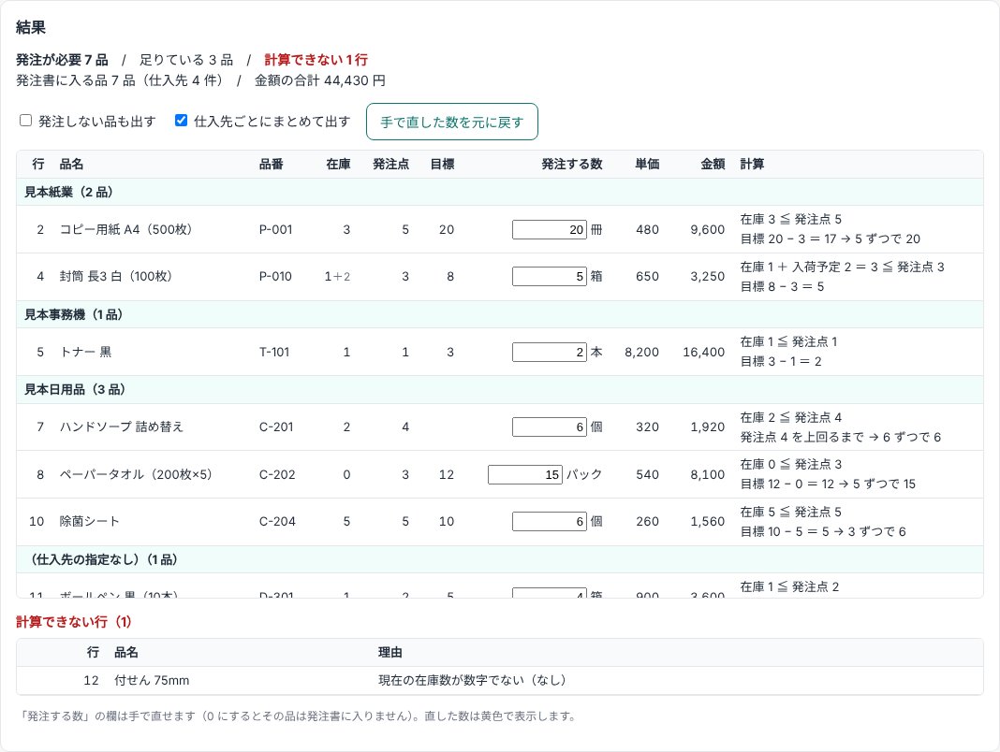
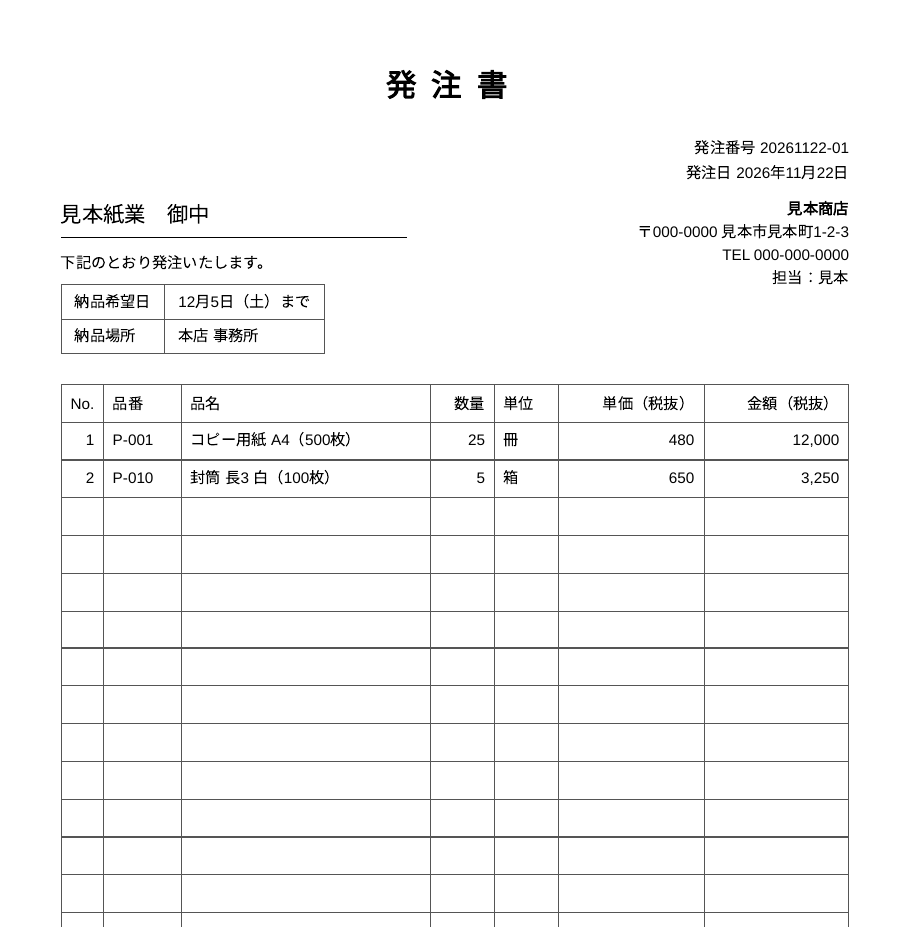

発注点チェックと発注書
在庫の表（品名・今の在庫数・発注点）を入れると、発注が必要な品と発注する数を計算し、仕入先ごとに1枚の発注書を A4 で印刷できるツールです。目標在庫・発注単位（ケース入数など）・最小発注数・入荷予定の列があれば、それも計算に入れます。在庫表を見ながら電卓で発注数を出し、発注書の雛形に1行ずつ写している作業をまとめて済ませられます。ソフトのインストールは不要で、いつものブラウザで動きます。
お試し版はすべての機能を使えて、計算・印刷・保存は表の先頭15行までです。決済が終わると、そのまま製品版の画面に移動します。ブックマークしておけば何度でも使えます。


見本のデータ（架空の事務所の備品11品、仕入先の名前も架空）で計算し、印刷した例です。
こんなときに
- 事務所の備品・店の消耗品・飲食店の食材の在庫表を毎週見て、発注する品と数を電卓で出している
- 「ケース単位でしか頼めない」「最低10個から」といった条件があり、発注数の計算をよく間違える
- 仕入先が何社かあり、発注書を Word や Excel の雛形に1社ずつ写して作っている
- 発注済みでまだ届いていない分を数え忘れて、二重に発注してしまったことがある
できること
- 発注が必要な品を出す：「今の在庫数（＋入荷予定）」が発注点「以下」になった品（「下回ったら」にも切り替えられます）
- 発注する数の計算：目標在庫の列があれば「目標在庫 − 在庫」、なければ発注点を上回るいちばん少ない数。発注単位（ケース入数など）の倍数に切り上げ、最小発注数より少なければ増やします。品ごとに計算の式（例：「目標 20 − 3 ＝ 17 → 5 ずつで 20」）を表示します
- 手で直せる：計算した数は画面で直せます（0 にするとその品は発注書に入りません）。直した品は色が変わります
- 仕入先ごとの発注書：1社につき A4 1枚（品が多ければ続きのページ）。宛名と敬称、発注番号（「20261122-01」のように自動）、発注日、納品希望日、納品場所、自社の名前・住所・電話・担当者、品番・品名・数量・単位、単価と金額（税抜・税込の表示を選ぶか、出さないこともできます）、合計、備考。記入用の空いた行も足せます
- 社内用の発注リスト：全部の仕入先の発注する品を1枚にまとめ、「済」の欄つきで印刷
- 保存：発注一覧（発注番号・仕入先・品名・数・金額…）と、元の表に「判定・発注する数・金額・計算」の列を足した明細を、Excel ファイル（.xlsx）か CSV で
- そのほか：「1日の使用数」の列があれば、在庫があと何日もつかを表示。在庫が「なし」など数字でない行は、行番号と理由を一覧にします。「1,200」「12個」「¥300」「３．５」のような書き方も数として読みます
- CSV（UTF-8・Shift_JIS）と Excel ファイル（.xlsx）を読めます。列は見出し（「在庫」「発注点」「入数」「仕入先」など）から自動で選び、画面で選び直せます。Excel の表をコピーして貼り付けても使えます
できないこと（購入前にご確認ください）
- 発注書の送信・発注そのものはしません。印刷するか PDF に保存して、いつもの方法（FAX・メール・手渡し）でお送りください
- 発注点や目標在庫を決める（売れ行きの予測など）ことはしません。表に入っている発注点・目標在庫で計算します
- 消費税の計算はしません。金額は「発注する数 × 単価の列の値」です。請求書・適格請求書（インボイス）の作成用ではありません
- 在庫の数そのものを管理する（入出庫を記録する）道具ではありません。数えた在庫の表を入れて使います
- スマートフォンでは操作しにくいため、パソコンでお使いください
Excel だけで発注数を出すなら
B 列に在庫、C 列に発注点、D 列に目標在庫、E 列に発注単位（1個ずつなら 1）があるとき、F2 に
=IF(B2<=C2,CEILING(D2-B2,E2),0)
と入れて下までコピーすると、発注点以下の品だけ「目標在庫 − 在庫」を発注単位の倍数に切り上げた数が出ます（CEILING は指定した数の倍数に切り上げる関数です）。目標在庫を決めていないなら、発注点を上回る最小の数は
=IF(B2<=C2,(INT((C2-B2)/E2)+1)*E2,0)
で出せます。あとはフィルターで 0 以外の行を出し、仕入先で並べ替えてください。
このツールが向いているのは、入荷予定や最小発注数も計算に入れたい、仕入先が何社かあって発注書を1社ずつ作るのが手間、在庫の欄に「なし」などが混ざっていて式がエラーになる、といったときです。
よくある質問
| データはどこかに送られますか？ | 送られません。読み込み・計算・印刷・保存はすべてお使いのブラウザの中で行います。自社の名前・住所などの設定だけをブラウザに保存し、表の中身は保存しません。 |
|---|---|
| どんな列が要りますか？ | 必ず要るのは「品名」「今の在庫数」「発注点」の3つです。目標在庫・発注単位・最小発注数・入荷予定・仕入先・単価・品番・単位・1日の使用数は、あれば使います。仕入先の列がなければ、全部を1枚の発注書にまとめます。 |
| 発注書の書式は変えられますか？ | 宛名の敬称（御中・様）、金額の欄（出さない・税抜・税込）、品番の列、空いた行の数、納品希望日・納品場所・備考の有無を選べます。ロゴや印影を入れることはできません（印刷してから押印してください）。 |
| 何品まで使えますか？ | 製品版は行数の制限はありません。2万行の表で、計算は1秒かからないことを確かめています（パソコンの性能によります）。画面の一覧は1,000品まで表示し、全部は印刷・保存に入ります。 |
安心してお使いいただくために
- 表はお使いのブラウザの中だけで処理し、サーバーには送信しません
- 動作環境：最新版の Chrome・Safari・Edge・Firefox（パソコン）
- 説明どおりに動かない場合は、ご購入から7日以内にご連絡いただければ返金します
年末・期末の棚卸で数を数える記入用の表は 棚卸の記入用シート印刷、発注書を FAX で送るときの送付状は 送付状の一括作成 もあります。